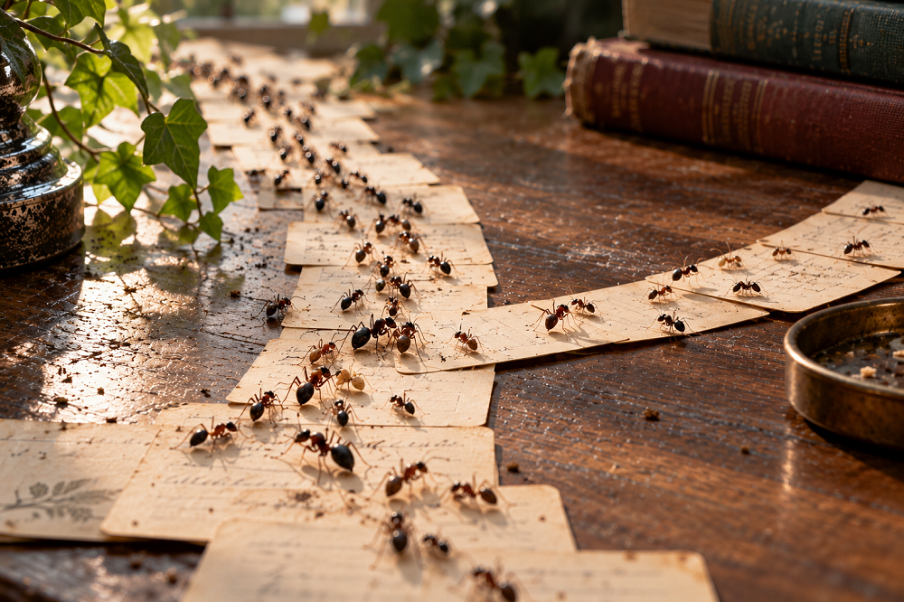

Home > Chronicles of a biblio-naturalist > Biomimesis in Action (08)
Biomimesis in Action (08)
The Ant Trail Rewrites Itself
Stigmergy, reinforcement, and path-dependent navigation
The Routes That Become Familiar
Knowledge management systems develop habitual routes. A search produces certain records before others; a subject heading gathers material under one term rather than another; a cross-reference sends a reader in a particular direction; a familiar classification offers a ready place for something newly acquired. Over time, some of these routes become so ordinary that their history disappears from view. They seem to belong to the structure itself.
Part of this stability is necessary. A catalogue that invented a new route for every search would be unusable, just as a classification that continually reorganized itself would make accumulated description difficult to interpret. Repetition creates continuity. It allows one person's work to remain intelligible to another and gives users some expectation of where things might be found.
But repetition has consequences of its own. A route that already exists is usually easier to use than one that must first be imagined, justified, documented, and maintained. A term present in thousands of records has an infrastructural advantage over a term that would require revising them. A heavily connected part of a catalogue is easier to encounter than an isolated record. Previous organization therefore alters the conditions under which later choices are made.
In many trail-forming ant species, something comparable happens through chemical reinforcement. Foraging workers deposit pheromone as they move, and later ants may respond to the concentration and distribution of those traces. A route that receives more traffic can acquire a stronger signal and attract still more traffic. Each passage therefore leaves behind information that can affect the movements that follow.
The route acquires a history that affects what happens next.
A Path Under Chemical Revision
Many ants recruit nestmates to food by depositing chemical signals along the route between a resource and the nest. A returning forager may lay trail pheromone, and workers encountering the trail can respond by following it. If some of those ants also reach the food and reinforce the same route, the chemical signal becomes stronger and can attract still more traffic.
This produces positive feedback. A small initial difference between two possible routes can be amplified through repeated use. Experiments with Argentine ants provided an early and influential demonstration. When colonies were offered alternative branches between nest and food, differences in travel time and pheromone reinforcement could lead traffic to concentrate on the shorter route even though no individual ant had compared the complete alternatives or calculated their lengths (Goss et al. 1989).
The mechanism became famous because it offers a striking example of collective coordination without central route planning. The familiar account, however, is too simple if it ends there. Trail pheromones operate alongside other sources of information. Ants may use individual memory, visual information, path geometry, encounters with nestmates, food quality, and several chemical signals with different functions. A major review of trail pheromones therefore describes colony foraging as the result of interacting positive and negative feedback processes rather than the mechanical following of a single chemical instruction (Czaczkes, Grüter, and Ratnieks 2015).
The trail is consequently a changing informational environment. Its current state partly reflects previous traffic, while present conditions continue modifying that state. What an ant encounters on the ground has already been shaped by ants that passed earlier.
Stigmergy and the Memory of Use
This form of coordination belongs to a broader family of processes described as stigmergy. Pierre-Paul Grassé introduced the term in 1959 while studying nest construction in termites. His concern was how apparently coordinated construction could arise when workers responded locally to a structure that previous activity had already modified. The work completed at one moment changed the environment encountered by workers arriving later, allowing coordination to proceed without a complete plan being transmitted among them (Grassé 1959).
Ant pheromone trails became one of the best-known examples of the same general principle. An individual leaves a trace in a shared environment; that trace affects later behaviour; later behaviour modifies the environment again. The important feature is temporal. The individuals involved do not need to meet, and the later worker does not need to know who produced the condition to which it responds.
For knowledge systems, this provides a useful distinction between records of activity and traces that participate in subsequent activity. Libraries preserve enormous quantities of evidence about what has already happened: accession records, circulation histories, earlier catalogues, superseded classifications, revision notes, statistics, correspondence, and logs. Much of this material can remain entirely historical. Its existence does not necessarily alter what a user or librarian encounters next.
Other traces do affect later possibilities. A link added to a record creates another route through the catalogue. A tag used repeatedly becomes easier to encounter and reuse. Usage data can influence recommendations or displays. Citation counts can affect visibility in scholarly discovery environments. Even without sophisticated algorithms, accumulated descriptive practice can make some choices easier to repeat simply because the previous work is already there.
In such cases, the history of use has entered the working structure of the system.
When Success Reinforces Itself
Reinforcement can be extremely useful when a system must respond quickly to information distributed across many individuals. If foragers repeatedly reach a profitable resource by one route, amplifying that route concentrates activity where it has been successful. No worker needs an overview of the entire foraging landscape for the colony to make effective use of collective experience.
The same process can make earlier success difficult to reconsider. Once a route attracts substantial traffic, continued traffic strengthens the conditions that favour it. An established option therefore begins from a different position than an unused alternative. Later choices take place in an environment already altered by earlier ones.
This is where ant trails become especially interesting for librarianship. A descriptive practice can persist because it continues to work reasonably well, yet its continued use also makes replacement progressively more expensive. A subject term represented throughout a catalogue becomes easier to reuse than a less familiar alternative. A group of records with rich linking and description attracts more retrieval partly because those connections make the material easier to discover. Materials described poorly or through vocabulary unfamiliar to current users may remain difficult to find and consequently generate little evidence of use.
Usage statistics can therefore contain more than information about demand. They may also contain traces of the conditions under which demand could be expressed.
This problem has become particularly visible in recommender systems. Research on popularity bias has shown how already prominent items can receive additional exposure and interaction, which may then contribute further evidence of popularity. The literature does not support treating popularity itself as a defect: popular material may be popular for good reasons, and the consequences depend heavily on the system and its purpose. What matters here is the possibility of reinforcement, because observed use may partly reflect the visibility produced by earlier rounds of recommendation or ranking (Klimashevskaia et al. 2024).
Libraries have long known a less algorithmic version of the same difficulty. Low circulation does not establish that a collection has little value. It may indicate poor description, weak placement, restricted access, unfamiliar terminology, limited promotion, or a user community that the institution does not currently reach. Once discoverability and use affect one another, the numerical record cannot be interpreted independently of the routes through which users reached the material.
How a Trail Loses Authority
If pheromone reinforcement simply accumulated, an established trail could become increasingly difficult to escape. Real ant foraging systems contain processes that limit this effect, and these processes vary among species and circumstances.
Experiments with Lasius niger provide a particularly useful example. Czaczkes, Grüter, and Ratnieks found that workers deposited substantially less trail pheromone under crowded conditions. The ants were responding to local encounters on the trail, and increased crowding reduced production of the recruitment signal responsible for positive feedback. The result was a negative feedback mechanism operating through reduced reinforcement (Czaczkes, Grüter, and Ratnieks 2013).
Related experiments examined crowding at feeding sites rather than encounters along the trail. When access to an established feeder was restricted, unsuccessful foragers left it and were more likely to encounter an alternative offering greater feeding access. Colonies could consequently redirect foragers toward that alternative. Agent-based modelling also showed that switching did not require pheromone decay: unsuccessful foragers could discover another source while the earlier trail remained present (Grüter et al. 2012).
That result makes the biological comparison considerably more interesting than a simple story about chemical traces fading with time. Revisability does not depend only on forgetting. A previous route may remain present while its capacity to attract further commitment changes.
Knowledge systems face an analogous distinction. Historical structures often need to remain visible because they explain how collections were organized, described, or interpreted. But continued visibility does not require continued authority. An obsolete subject term can remain documented without continuing as the preferred term. An earlier classification can stay recoverable while current description follows another arrangement. Usage histories can be preserved without allowing accumulated popularity to determine every future route through a collection.
A system capable of revision therefore needs some way for inherited pathways to lose operational weight without losing their history.
Paths Through Knowledge
The practical value of this mechanism is clearest where librarians work with systems that accumulate traces of their own use. Search interfaces, recommendation tools, user-generated tags, linked records, citation services, frequently used terms, digital exhibitions, and collaborative description can all allow earlier activity to affect later navigation. The strength of that effect differs enormously, and many library systems still operate through rules established explicitly by professional or institutional authority rather than through feedback from use.
Calling every repeated practice stigmergic would make the concept useless. A cataloguer following RDA because institutional policy requires it is responding to a rule. A cataloguer choosing a term because thousands of inherited records already make that term the easiest available route involves a different kind of historical pressure. A search system that ranks results according to explicit fields and weights differs again from one that incorporates previous user interactions into later ranking.
The ant trail encourages attention to those distinctions because it directs the question toward mechanism. Where does evidence of previous activity remain? How does a later participant encounter it? Does encountering that trace alter a subsequent choice? Does repeated use strengthen the same route, and under what conditions can another route become viable?
These questions can be asked without assuming that decentralized organization is desirable. They are useful because they expose a part of knowledge infrastructure that is easy to overlook: systems do not merely organize materials. Through repeated use, some of them also accumulate conditions that influence how their organization will be used again.
What the Ant Trail Does Not Solve
Foraging ants face problems that are far narrower than those confronted by libraries, archives, museums, and communities responsible for knowledge. A successful trail can often be evaluated through access to food, travel time, traffic, or energetic return. A successful descriptive route cannot be judged so simply. A classification may support efficient retrieval while reproducing terminology a community rejects. A highly used collection may receive disproportionate resources while less visible materials remain neglected. A route can be efficient and still encode a poor decision.
Pheromone reinforcement also has no equivalent of professional accountability. Ants do not need to explain why one trail became dominant, document who was excluded from establishing it, preserve competing interpretations, or negotiate rights over the resource to which it leads. These obligations belong to human institutions and cannot be derived from collective insect behaviour.
The comparison is therefore useful within a limited domain. Ant trails show how previous activity can become embedded in an environment and influence later activity, how repeated success can amplify one route, and how feedback processes can preserve some capacity to change when circumstances shift.
For knowledge systems, the consequence is less a design recipe than a question about inherited pathways. Every catalogue, vocabulary, interface, and repository contains routes shaped by earlier decisions. Some deserve continuity because they remain useful. Others survive partly because their previous use has made continued use easier.
A system that records its history can examine that inheritance. One in which history also shapes future navigation must do something more difficult: preserve enough continuity to remain intelligible while retaining enough freedom for another path to become possible.
Bibliography
- Czaczkes, Tomer J., Christoph Grüter, and Francis L. W. Ratnieks. 2013. "Negative Feedback in Ants: Crowding Results in Less Trail Pheromone Deposition." Journal of the Royal Society Interface 10 (81): 20121009.
- Czaczkes, Tomer J., Christoph Grüter, and Francis L. W. Ratnieks. 2015. "Trail Pheromones: An Integrative View of Their Role in Social Insect Colony Organization." Annual Review of Entomology 60: 581–599.
- Goss, Simon, Serge Aron, Jean-Louis Deneubourg, and Jacques M. Pasteels. 1989. "Self-Organized Shortcuts in the Argentine Ant." Naturwissenschaften 76: 579–581.
- Grassé, Pierre-Paul. 1959. "La reconstruction du nid et les coordinations interindividuelles chez Bellicositermes natalensis et Cubitermes sp. La théorie de la stigmergie: essai d’interprétation du comportement des termites constructeurs." Insectes Sociaux 6: 41–80.
- Grüter, Christoph, Roger Schürch, Tomer J. Czaczkes, Keeley Taylor, Thomas Durance, Sam M. Jones, and Francis L. W. Ratnieks. 2012. "Negative Feedback Enables Fast and Flexible Collective Decision-Making in Ants." PLoS ONE 7 (9): e44501.
- Klimashevskaia, Anastasiia, Dietmar Jannach, Mehdi Elahi, and Christoph Trattner. 2024. "A Survey on Popularity Bias in Recommender Systems." User Modeling and User-Adapted Interaction 34: 1777–1834.